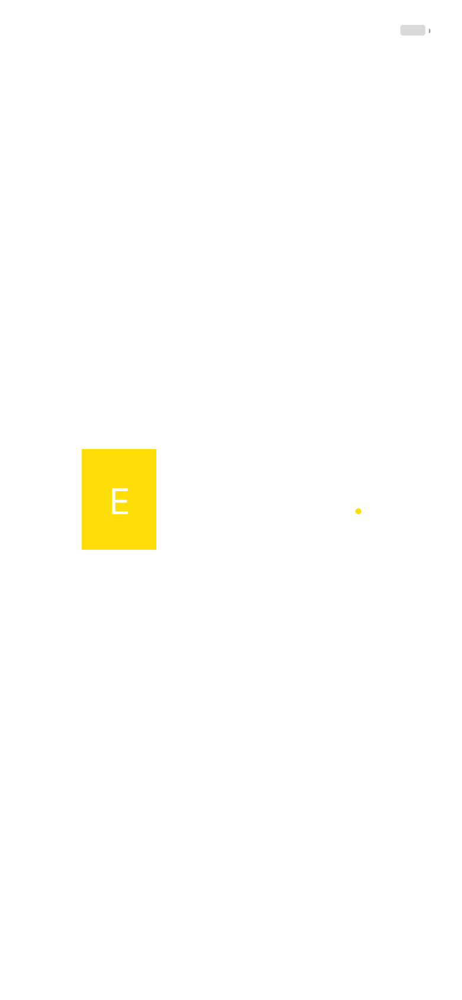
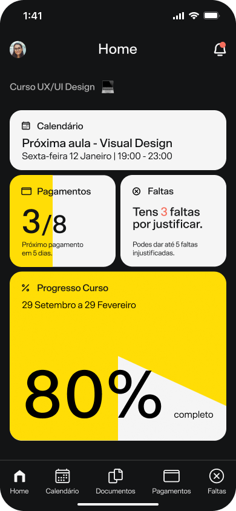
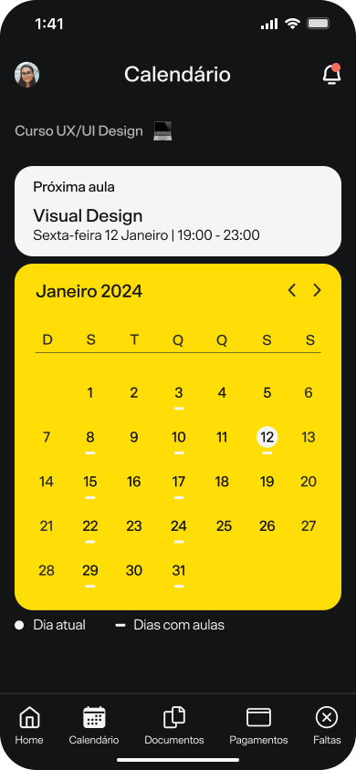
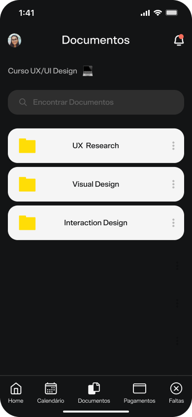
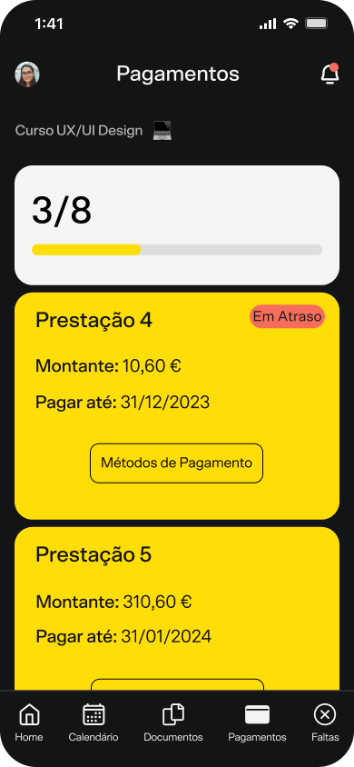
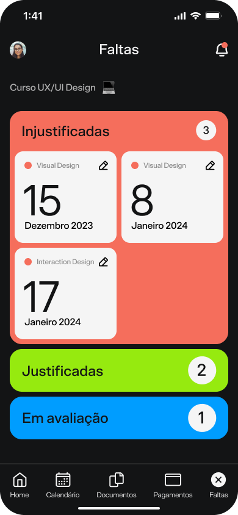
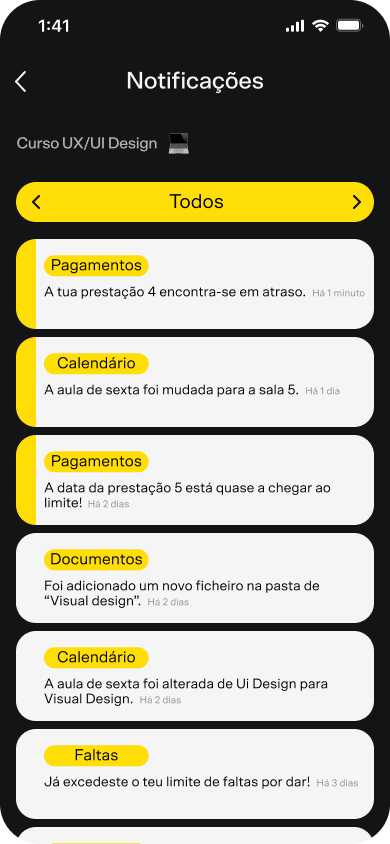
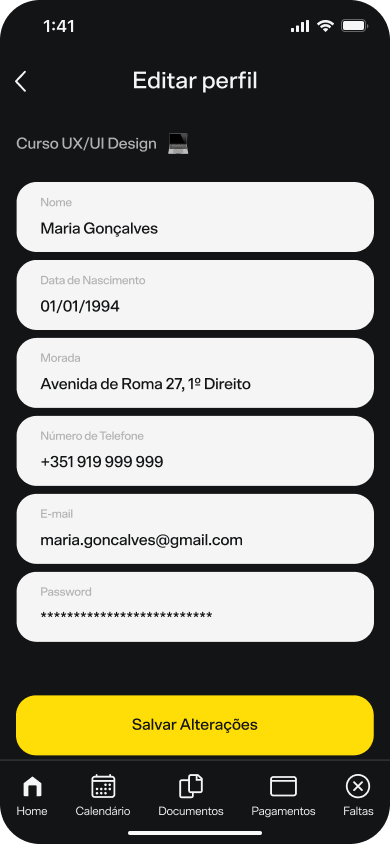

EDIT.
A simpler way to manage student life.

Your course, organised around you.
Less searching. More studying.
A better way to stay on track. EDIT is a student management app concept designed to bring essential academic information into one place.
The project explores how students could manage their course documents, payments, absences and class schedules through a more intuitive mobile experience.
By understanding the everyday challenges faced by EDIT school students, the goal was to create a digital companion that reduces administrative friction and makes student life easier to manage.
Overview
Students often rely on different platforms and communication channels to manage their academic responsibilities.
Course documents can be difficult to find, payment information is scattered, and important updates may get lost in email or other channels.
The project focused on creating a single mobile experience that brings these tasks together, giving students a clearer overview of their course and the information they need.
Everything you need, in one place.
Bring course information and documents together.
Make common student tasks easy to complete.
Keep students informed about classes, payments and important updates.
The challenge
Research identified several recurring difficulties in the EDIT student experience.
Students described challenges with finding course documents, sharing class materials, planning their schedules and keeping track of payment instalments.
The existing experience also made it difficult to manage absences and receive important information without contacting the school directly.
Design question
How might we help students manage their academic responsibilities through one clear, accessible and intuitive mobile experience?
People first
The project focuses on EDIT school students who need to manage their course alongside work, personal responsibilities and everyday life.
Research included questionnaires and interviews with students and tutors, helping identify common pain points and opportunities for improvement.
Needs quick access to documents, slides and learning materials.
Wants to understand payment deadlines, track instalments and manage attendance.
Needs a reliable overview of the academic calendar and upcoming lessons.
What gets in the way?
- Course documents spread across different platforms.
- Difficulty tracking payment instalments and invoices.
- Uncertainty about absence allowances and justifications.
- Important updates communicated through email or other channels.
- Limited visibility of upcoming classes and course information.
From information to action
The experience brings the most common student tasks into a single mobile app.
The dashboard acts as a starting point, giving students quick access to their course information and the actions they need to complete.
Room to stay organised
A central dashboard provides an overview of upcoming classes, payment deadlines and important information, helping students understand what needs their attention without searching through multiple platforms.
A more connected student experience
The design direction focuses on making essential information accessible through a consistent and intuitive interface.
Rather than treating documents, payments, absences and the calendar as separate experiences, the app brings them together through a shared navigation system.
Students have to remember where information lives and how to complete each task.
Bring information together, simplify common tasks and make the next action clear.
Wireframes
The exploration focused on translating research findings into user stories, task flows and a mobile information architecture.
The wireframes tested how students could navigate between the main areas of the app and complete their most common tasks with fewer steps.
The design work explored how to:
- Organise course documents into clear categories.
- Make payment information easier to understand.
- Simplify the absence justification process.
- Improve access to the academic calendar.
- Create a dashboard that prioritises essential information.
The aim was to make the app feel intuitive while supporting the different administrative needs of student life.
EDIT in action
Explore the main EDIT app screens for the app introduction, student dashboard, calendar, documents, payments, absences, notifications and profile management.








Designed for everyday student life
The proposed app combines a central dashboard with dedicated areas for the most important student tasks.
A clear overview of upcoming classes, payments and key information.
Organised course materials that students can view and download.
Payment tracking, instalment information and invoice access.
A dedicated area to view attendance, check absence allowances and submit justifications.
An academic calendar with class information and upcoming lessons.
Updates about important deadlines, course information and changes.
Designed around student needs
The interface focuses on making common tasks easier to complete and giving students greater visibility over their responsibilities.
A clearer dashboard
The home screen provides an overview of essential information, helping students quickly access the areas they use most.
Documents that are easier to find
Course materials are organised into folders and categories, allowing students to access and download the files they need.
Payments with more visibility
Students can see upcoming payments, review instalments and access invoices in one place.
Absences with less friction
The absence management flow makes it easier to review attendance and submit a justification, including uploading supporting documentation.
A calendar that supports planning
The academic calendar provides a clearer view of classes, dates and relevant lesson information.
A more organised student experience
The project proposes a unified mobile experience that brings essential academic tasks into one place.
By combining a central dashboard with dedicated areas for documents, payments, absences and the calendar, the app aims to reduce the effort required to manage everyday student responsibilities.
The design translates research findings into a clear information architecture and intuitive task flows, helping students stay informed and organised throughout their course.
The result: a student management app concept designed to make academic life easier to navigate, manage and plan.